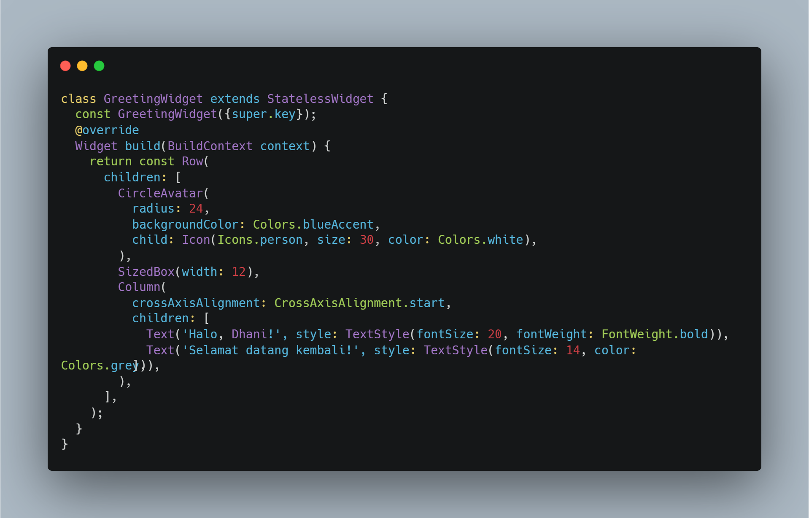
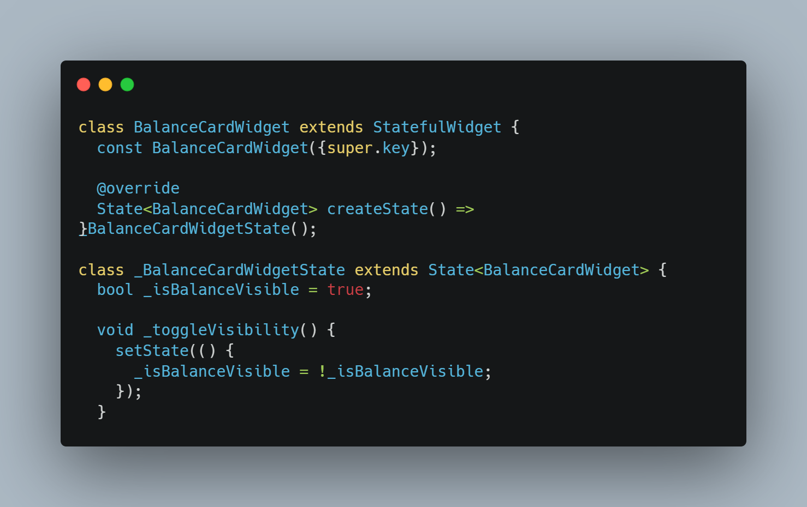
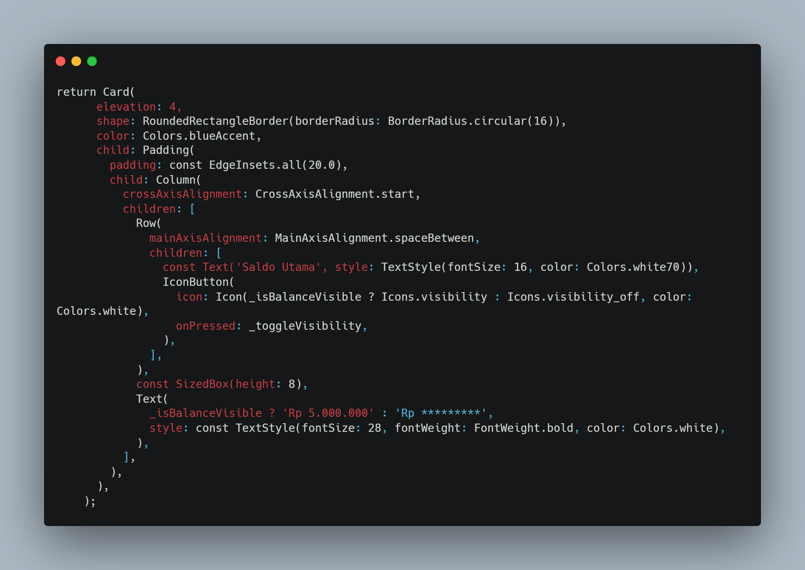
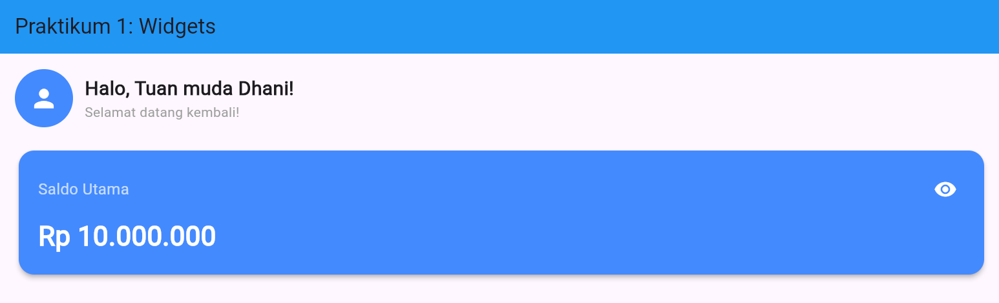
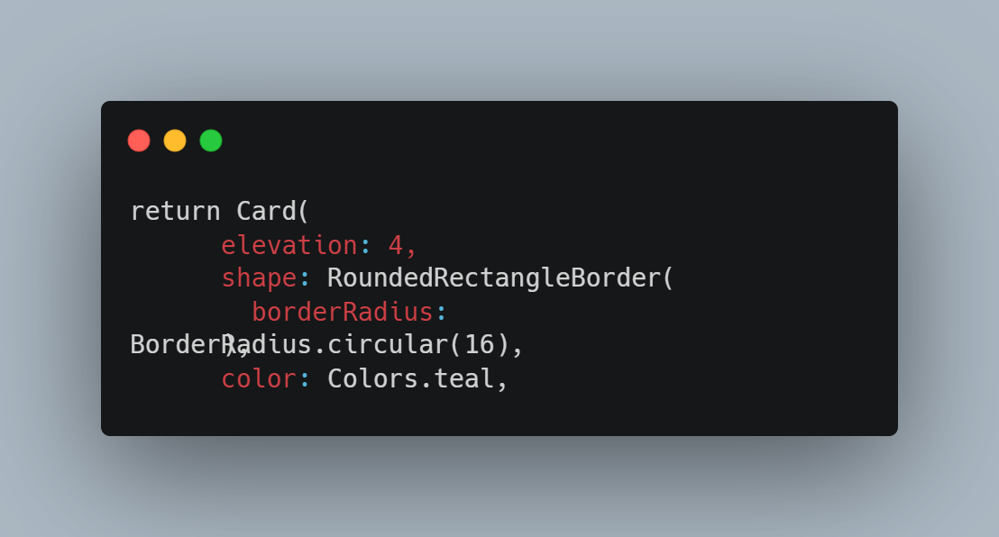
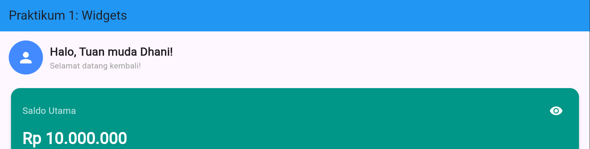
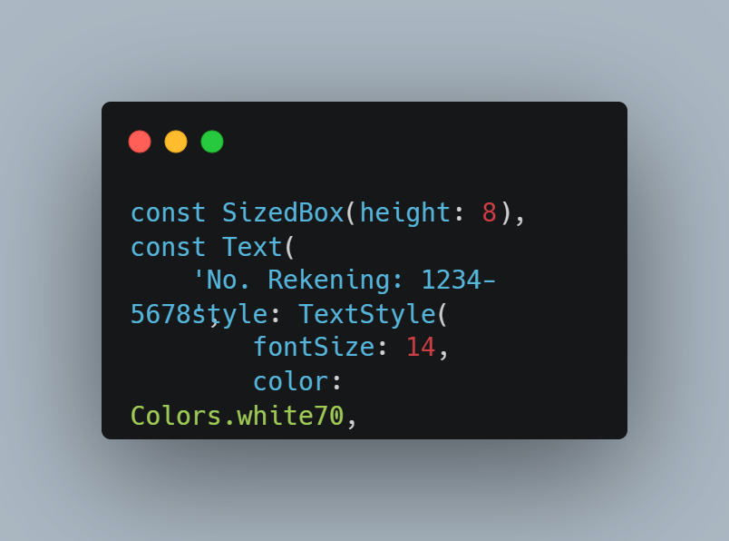
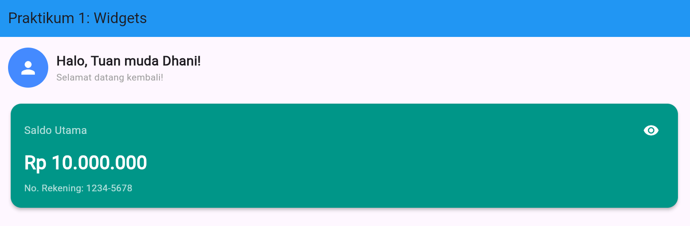

Praktikum 2: State Management Dasar
A. Pendahuluan
Pembangunan aplikasi masa kini menuntut cara yang efisien dalam menciptakan antarmuka pengguna yang responsif dan menarik. Flutter, sebuah framework yang menggunakan bahasa Dart, menawarkan pendekatan UI deklaratif, di mana semua elemen antarmuka dibentuk lewat komponen modular bernama widget. Struktur dasar aplikasi Flutter biasanya dimulai dengan kontainer utama seperti MaterialApp dan Scaffold, yang berperan sebagai pondasi untuk tata letak, tema, dan keseluruhan tampilan visual.
Di dalam Flutter, pengelolaan tampilan terbagi menjadi dua: StatelessWidget untuk komponen yang bersifat statis dan tidak mengalami perubahan, serta StatefulWidget untuk komponen dinamis yang mampu menyimpan data internal. Praktikum ini menitikberatkan pada penerapan konsep dasar manajemen state menggunakan fungsi setState(), yang diwujudkan melalui pembuatan antarmuka dasbor interaktif berisi sapaan pengguna dan kartu saldo dengan fitur penyensoran nominal serta penyesuaian tampilan.
B. Tujuan
Tujuan dari praktikum ini adalah:
- Memahami susunan dasar aplikasi Flutter beserta hubungan hierarki widget melalui penggunaan MaterialApp dan Scaffold.
- Mengidentifikasi perbedaan peran, sifat, dan penerapan StatelessWidget maupun StatefulWidget saat membangun antarmuka aplikasi.
- Menggunakan setState() untuk memperbarui tampilan secara dinamis ketika terdapat perubahan pada data atau kondisi aplikasi.
- Merancang struktur antarmuka yang rapi dengan mengombinasikan widget Row, Column, Card, dan Padding.
- Menyesuaikan warna pada kartu saldo serta menambahkan informasi nomor rekening berbentuk teks statis sesuai ketentuan praktikum.
C. Langkah Praktikum
1. Widget Sapaan (Stateless)
Kode ini mendefinisikan StatelessWidget bernama GreetingWidget untuk menampilkan header sapaan yang bersifat statis dan tidak berubah setelah pertama kali ditampilkan. Tampilannya disusun secara horizontal menggunakan Row, yang memuat Column di sisi kiri untuk menumpuk teks sapaan secara vertikal, serta CircleAvatar di sisi kanan sebagai tempat ikon profil pengguna.

2. Kartu Saldo (Stateful)
Kode ini menyusun kerangka dasar StatefulWidget bernama BalanceCard dengan memisahkan dua kelas agar tampilannya bisa berubah-ubah dan merespons interaksi pengguna. Kelas _BalanceCardState berperan menyimpan status internal, di mana variabel boolean _isObscure mengatur apakah nominal saldo disembunyikan atau ditampilkan, sementara variabel _balance menyimpan nilai uang yang akan ditampilkan.

3. Menambahkan Interaktivitas (setState)
Kode ini membuat tombol IconButton menjadi interaktif dengan memanggil setState(), yang berfungsi membalik nilai _isObscure setiap kali ikon ditekan. Pemanggilan setState() memberi tahu Flutter untuk memperbarui tampilan UI, sehingga logika operator ternary otomatis mengganti teks saldo antara versi tersensor dan nilai asli, sekaligus mengubah ikon mata yang menyertainya.

4. Hasil Akhir
Setelah semua komponen diimplementasikan, aplikasi menampilkan antarmuka dasbor yang terdiri dari widget sapaan di bagian atas, disusul dengan kartu saldo yang dapat disensor nominalnya menggunakan ikon mata.

D. Tugas
- Ubah warna tema BalanceCard dari biru (Colors.blueAccent) menjadi hijau emerald (Colors.teal).


- Tambahkan teks statis berupa "No. Rekening: 1234-5678" di bagian bawah nominal saldo di dalam kartu.


E. Kesimpulan
Berdasarkan kegiatan praktikum yang telah dijalankan, dapat ditarik kesimpulan bahwa memisahkan StatelessWidget dan StatefulWidget menjadi landasan utama dalam merancang antarmuka Flutter yang optimal. Widget GreetingWidget berhasil diimplementasikan sebagai komponen statis untuk menampilkan ucapan sapaan beserta avatar pengguna, sementara BalanceCardWidget berhasil menghadirkan kartu saldo yang interaktif, mampu merespons ketukan pada ikon mata untuk menyembunyikan atau menampilkan jumlah saldo secara langsung dengan memanfaatkan metode setState().
Di samping itu, tugas praktikum berhasil diselesaikan dengan mengganti skema warna BalanceCardWidget dari Colors.blueAccent menjadi Colors.teal, serta menyisipkan teks statis berisi nomor rekening tepat di bawah angka saldo dalam struktur layout Column. Secara keseluruhan, praktikum ini memperdalam pemahaman tentang hierarki komposisi widget, penataan layout, serta logika dasar pengelolaan state pada Flutter.